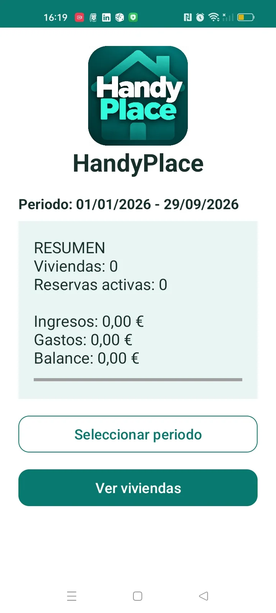
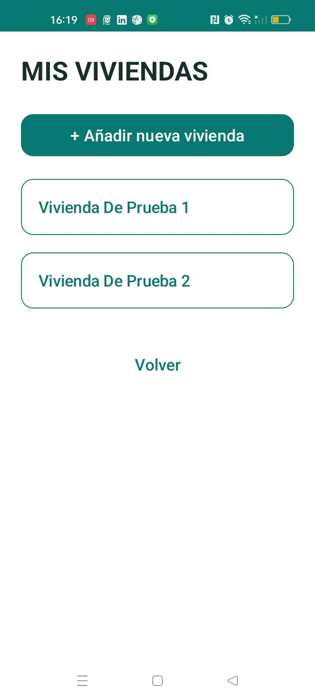
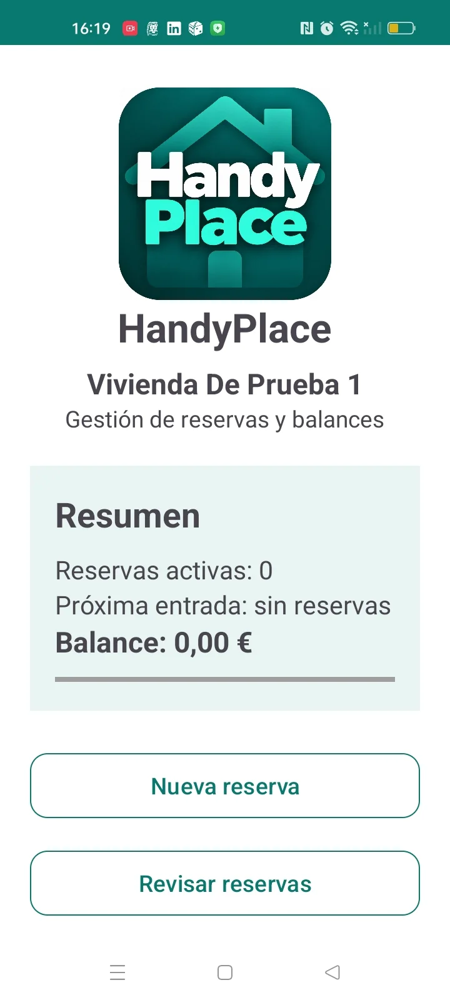
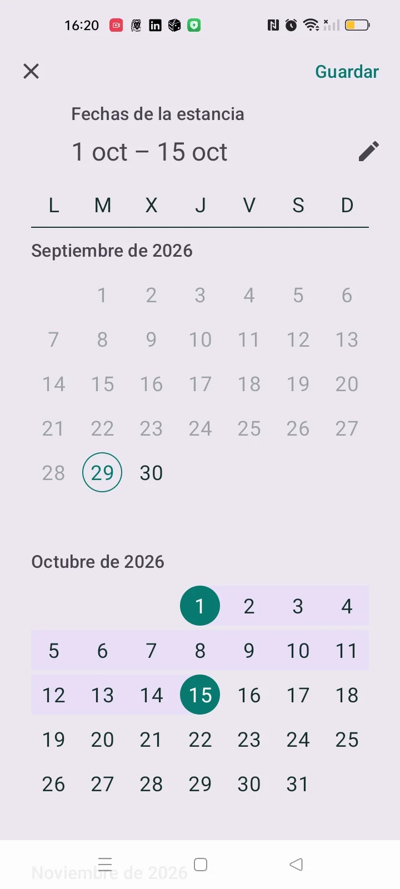
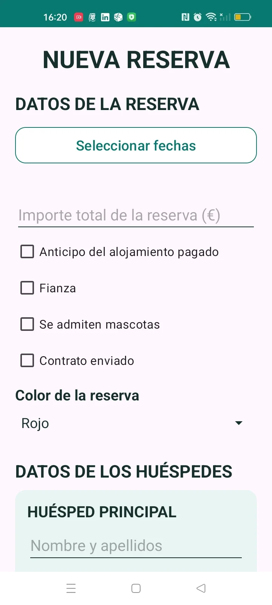
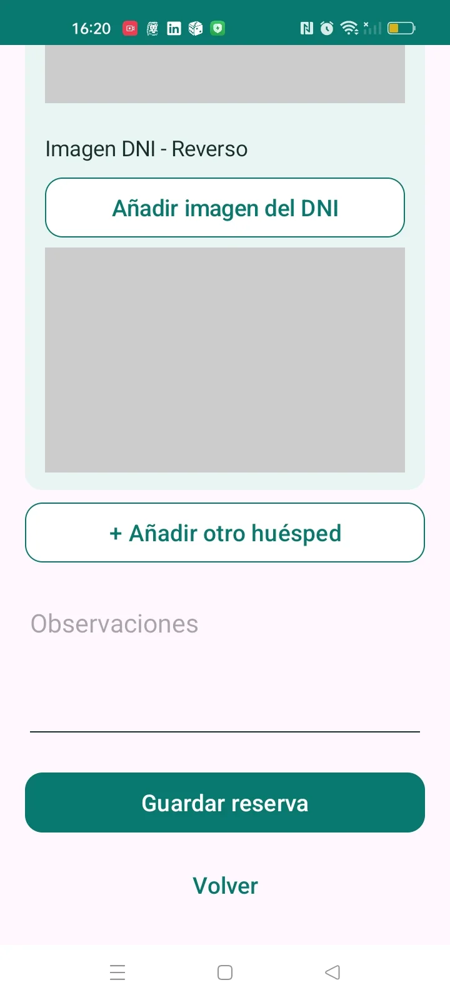
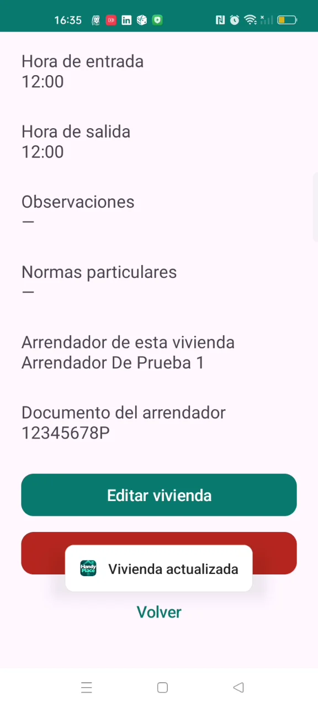

Project 01
HandyPlace
An Android app that brings rental property management together: bookings, guests, contracts, payments, expenses and tasks in one clear, organised tool.
Project overview
HandyPlace brings together information that often ends up across calendars, documents, photos, notes and payment records. It began with a single property and grew to manage multiple homes, each with its own bookings, guests, landlord, payments and tasks.
The challenge
How could one mobile app bring together properties, bookings, guests, documents and finances without becoming difficult to use? Expanding its scope meant revising the navigation, forms and data model while preserving existing records.
Empathise
The project grew from a practical need shared by property owners and small accommodation managers. Usage and testing exposed crowded forms, repeated entry, unclear action hierarchy and the need to see a property or booking status quickly. These observations shaped the UX iterations; there were no formal interviews or market studies.
Define
The priorities were to keep each property’s records separate, guard against date conflicts, reduce unnecessary fields and reuse saved data for documents. A booking needed to remain accessible and editable alongside its guests and financial details.
Ideate
Navigation has two levels: an overview followed by each property’s own workspace. The booking flow moves from dates and guests to payments, review and contract generation.
Prototype and iterate
The original single-property scope became a multi-property structure. Iterations refined button hierarchy, date and time pickers, adaptive forms, financial summaries and automated contracts. The navigation and SQLite schema evolved while keeping saved records.
Test
I tested the app on an OPPO CPH2135 running Android 12, alongside assembleDebug, testDebugUnitTest and assembleAndroidTest. The cycle was to implement, use, identify an issue, fix it and test again. This helped refine dates, overlapping bookings, persistence, forms, PDFs, balances and visual consistency.
The finished product
Screenshots offer a quick view of the interface; short videos show real interactions. All demonstrations use test data and play only when selected. Turn on the sound to hear the background music.
A clear overview
The dashboard shows properties, active bookings, income, expenses and balance for the selected period. From there, a property can be created or selected, with its records kept separate.



A booking with only the fields needed
The range picker selects check-in and check-out and calculates the nights. Past start dates and overlaps are checked, while back-to-back stays are allowed. Advance payment, deposit and pets reveal extra fields only when enabled; pets can be described in free text.


Guests and documents in one flow
A booking links a lead guest and additional guests with their contact details. Document images can be added from the camera or gallery and are stored locally on the device.

Each property has its own settings
Address, location, check-in and check-out times, house rules and landlord belong to the selected property. The landlord is not global; different properties can have different landlords.

From booking to management
A saved booking can be viewed and edited, including its guests, payments and status. Payments are added to the booking, and manual expenses feed the balance. Historical bookings remain available after their check-in date.
From saved data to contract
The PDF contract reuses property, landlord, guest, date, payment, deposit, pet, hours and house-rule details, avoiding repeated entry. It supports multiple tenants. At generation time, an optional landlord representative can be added by entering their name and ID. The PDF can then be opened or shared.
Financial overview
Balance and Statistics support period selection and show income, expenses, balance, booked nights, occupancy and average nightly price. Balance indicators use green for positive, red for negative and grey for zero.
Property tasks
Tasks organise pending and completed work for each property. You can add tasks, mark or unmark them as completed, and delete them using the X on their row. The app asks for confirmation before deleting a task.
Confirmation before deletion
Deleting a property requires successive confirmations, including typing ELIMINAR. The interface explains that associated data will also be removed before the action is completed.
Technology and privacy
Kotlin and the Android SDK power the app and device features; XML builds the screens; SQLite relates properties, bookings, guests and financial records. Android APIs support notifications, camera or gallery access, pickers and opening or sharing PDFs. Personal data and documents stay on the device; there is currently no cloud sync.
What I learned
A working app is not necessarily finished. Real-world testing exposed form overload, the importance of validating dates and states, and the value of consistent visual hierarchy. Evolving SQLite without losing records and reusing information across properties, bookings, guests and contracts were key decisions. Starting again, I would design for multiple properties and future data growth from day one.